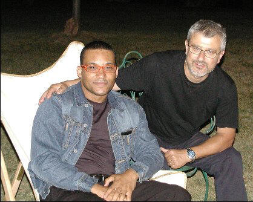
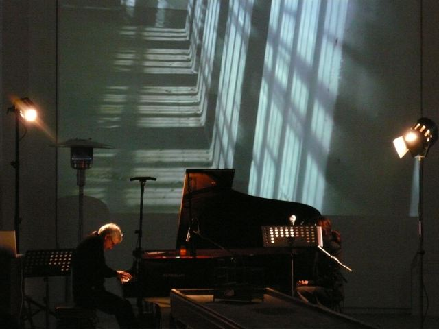
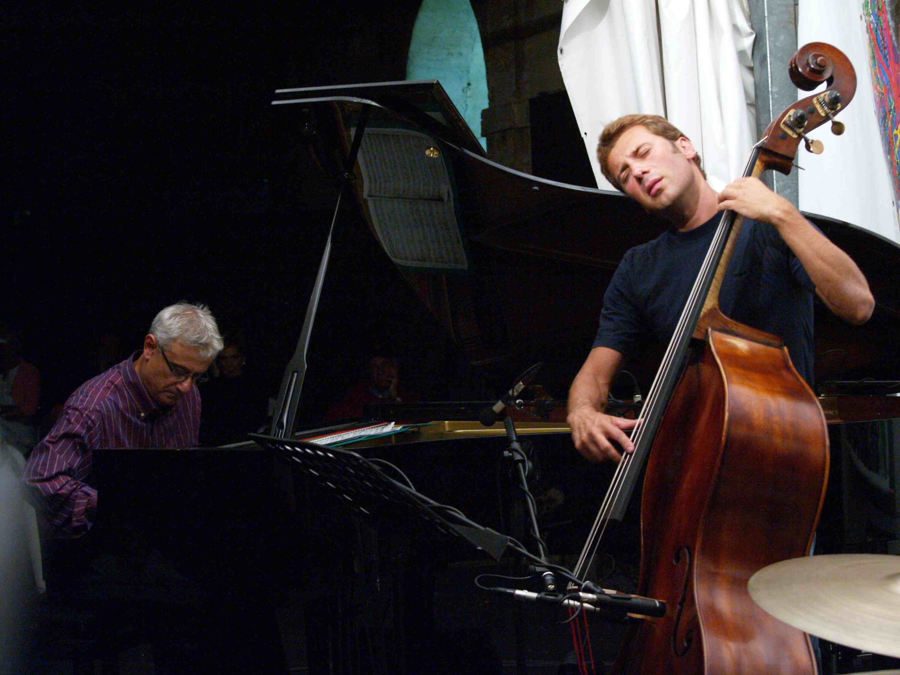
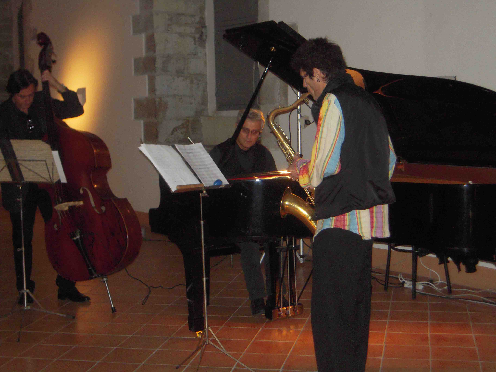
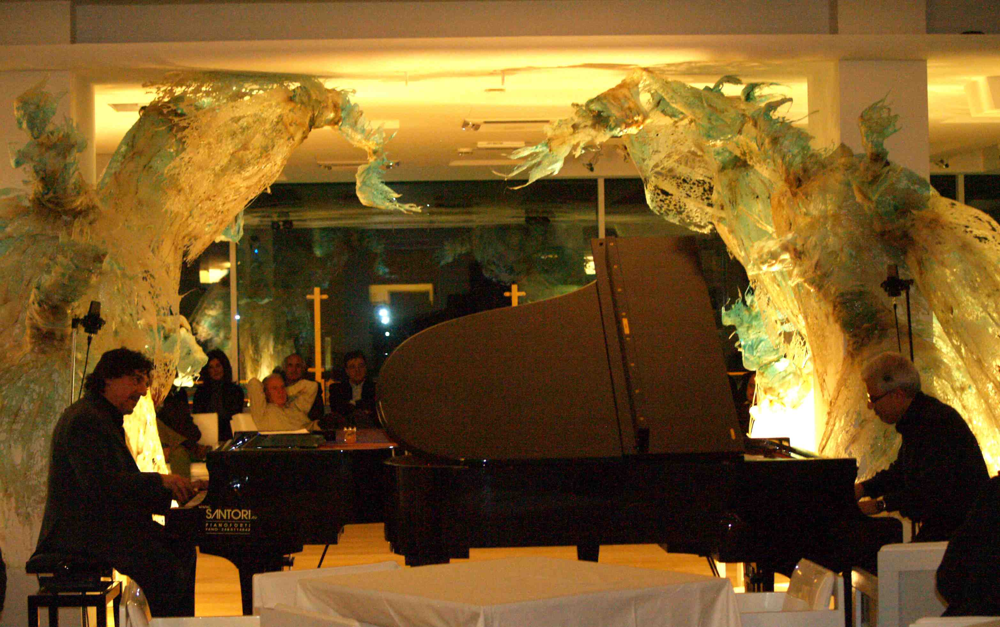

Eugenio Giordani Transcription Page
Eugenio Giordani ha iniziato l'esperienza di pianista jazz alla fine
degli anni '70, suonando prevalentemente nell'ambito dei club marchigiani
e in jam sessions con molti musicisti tra i quali:
Giovanni Amori, Giorgio Lugli, Gianni Giudici, Andrea Bartelucci,
Carlo Fabbri, Guido Guidoboni, Mimmo Mancinelli, David Keberle,
Peter Guidi,
Tommaso Lama, Vittorio Gennari, Jimmy Owens, Bobby Watson, Massimo Manzi,
Joe Pagnoni, Max Tonelli, Marco Cempini, Marco Salvarani, Larry Nocella,
Massimo Urbani, Adriano Pedini, Paolo Pellegatti, Giulio Capiozzo,
Luigi Bonafede, Jean Gambini, Ivan Gambini, Pietro Tonolo, Riccardo Marongiu,
Barbara Piperno, Giacomo Pietrucci ,
Gigi Faggi, Filippo Fucili, Emanuele Cecchetelli, Stefano Travaglini,
Gianluca Nanni.
Attualmente insegna "Tecniche della Comunicazione" al Biennio di
specializzazione in Musica Jazz presso il Conservatorio G. Rossini
e "Tecnica pianistica jazz" presso lo stesso istituto al triennio
sperimentale di I livello dello stesso corso di laurea.
Questa pagina è un mio personale tributo ai maestri dell'improvvisazione
jazzistica. Se il jazz è soprattutto improvvisazione, non è detto che
alcune grandi pagine di musica debbano sempre essere solo riprodotte
attraverso la registrazione originale. La musica non è un quadro,
mai: se la coerenza e il valore musicale di un'improvvisazione sono
in taluni casi indistinguibili da una pagina scritta, non v'è ragione
per non tentare di riproporla direttamente.
Naturalmente, oltre ad un' abituale pratica di studio di molti
jazzmen professionisti e studenti, la trascrizione assume un
valore per gli aspetti analitici che sottende e converte in memoria
scritta la componente melodica e armonica, non risolvendo comunque
le implicazioni semiologiche e di pronuncia.
Per un musicista jazz che si eserciti nell'atto improvvisativo, il
maggiore vantaggio che si trae da una trascrizione sta nel "fare"
e "suonare" la trascrizione. Personalmente sono più attratto dal fare
la trascrizione, ed eventualmente rieseguirne qualche parte, piuttosto
che partire da una già pronta. In ogni caso, non è mai un'operazione inutile.
Ho trascritto in diversi anni, molti brani di grandi maestri dell'
improvvisazione : Bill Evans e Keith Jarrett, oltre a molti altri
(Corea, Melhdau, Peterson, Brubeck, Smith, Auger). Nonostante esistano
oggi molte improvvisazioni edite, tanto è ancora da fare. Soprattutto,
al di là delle note è fondamentale apprendere l'atteggiamento del singolo
musicista cercando di immedesimarsi nel suo pensiero. Se si comprende
questo, le note saranno solo un dettaglio momentaneo. Ma all'inizio sono
proprio le note, l'ampiezza del fraseggi e dei respiri, la qualità del
suono a determinare un meccanismo che diventerà bagaglio permanente
della formazione di un buon improvvisatore. Molti grandi jazzisti hanno
cominciato imparando a memoria interi assoli dei loro maestri.
N.B. Queste trascrizioni NON sono a fine di lucro e comunque sono il
frutto di ore e ore di lavoro paziente, passione e impegno.
Ho tantissimo materiale manoscritto che non vorrei disperdere
(almeno 6 grossi quaderni di musica) e mi sono ripromesso di
"pubblicare" su questa pagina. Ci vorrà molto tempo.
Il primo tributo che vorrei dedicare è per Keith
Jarrett e siccome ritengo che "Facing You" sia un capolavoro
irripetibile ed incredibile per coerenza stilistica e tecnica
strumentale vorrei rendere disponibile la parte più spettacolare
di "Starbright". Mi sono permesso di dire una volta che il
valore di Facing You può essere paragonato agli Studi di
Chopin. Chi fosse interessato al resto della partitura può
contattarmi via e-mail. Ho realizzato le trascrizioni al mio
Steinway Mod. A, con l'ausilio di un notebook, Cool Edit Pro,
dapprima in bozza con matita e carta, poi utilizzando Finale.
Non tutte le improvvisazioni (diversi quaderni pieni) sono
terminate e tantomeno trascritte. Ultimamente mi sono concentrato
sulle "intro" e sui "finali" piuttosto che sui "solo".
STARBRIGHT (excerpt from
free transcription
by E. Giordani)
La prossima trascrizione è ancora Jarrett con il suo trio storico
(Peacock, DeJohnette). Questa volta un'introduzione (che ritengo
siano l'elemento di qualità nella presentazione degli standard,
almeno uno importante) . Il brano è On Green Dolphin Street
(cui segue una coda chilometrica ma irresistibile che ha anche
un titolo, Joy Ride) tratto dal 5° CD dei 6 registrati al Blue
Note. Ho trascritto anche la versione di On Green Dolphin
Street di Standards 2 (Video della Verve). E' interessante
notare quanto diverse siano le due introduzioni e conseguentemente
tutto il clima che ne consegue.
ON GREEN DOLPHIN STREET
(excerpt from free transcription
by E. Giordani)
Come già detto, credo che uno degli aspetti più stupefacenti della
genialità di Jarrett sia quella che ritroviamo nelle "intro"
e nei "finali" dei brani. Col Trio ve ne sono molti esempi.
Alcune in forma libera (come variazione/estensione del tema),
altre più tematiche ma non per questo meno significative.
In "Whisper Not", nel brano che da il titolo all'album forse
più osannato dalla critica (perchè "finalmente si sente un
Jarrett bopper" e altre cosette del genere....), l'intro
è molto aderente al tema ed è assolutamente a tempo.
Questo non toglie che il risultato sia un meraviglioso
equilibrio di inventiva e rispetto del clima del brano
(si vedano i frammenti di marcetta ondulante proposti
alla mano sinistra con gruppi di terzine di ottavi alle
battute 14 , 24 e 30). La fine dell'intro sfocia nell'esposizione
del tema in forma ancora variata ma assieme al cb. e batt.
(primo A) per poi riprenderlo alla lettera nel secondo A.
Una piccola perla!
WHISPER NOT
(excerpt from free transcription
by E. Giordani)
Avrei voluto non riproporre un'altro brano di Jarrett,
ma non ho resistito alla tentazione di trascrivere
(almeno una parte) del bis eseguito nel Concerto di
Tokyo (Last Solo, 1984), disponibile in DVD e registarato
alla Kanihoken Hall . Jarrrett esegue questo bis dopo
essere stato chiamato dal pubblico in delirio dopo una
delle svariate versioni di Over the Rainbow, che trovo
personalmente molto interessante e meno autoreferenziale
di quella più famosa della Scala. Ritorna sul grande palco
e attacca questo tempo latino (come una sorta di habanera
veloce in 4/4) basato su un'ostinato alla mano sinistra
che porta fino alla fine del brano immutato. Sembra un
brano tradizionale con un tema molto chiaro nella tonalità
di F maj. All'apparenza facile ma vi assicuro di difficile
esecuzione per gli incastri ritmici con la mano destra.
Solo dopo molto esercizio si riesce a trovare quella spinta
propulsiva e quella fluidità per eseguirlo senza troppa
meccanicità. E' sorprendente la diteggiatura che vorrei
tra qualche tempo mostrarvi. Una diteggiatura che tende ad
allargare la posizione delle prime tre dita della mano destra.
TOKYO '84 ENCORE
(excerpt from free transcription
by E. Giordani)
Non si vive di solo Jarrett. Naturalmente. Ciò che vi propongo ora è una
trascrizione di un tema molto interessante di
un altro dei grandi maestri della tastiera (e in questo caso si può proprio
dire delle "tastiere"). Sto parlando ovviamente
di Armando Anthony Anthony Corea (detto Chick). Sicuramente uno dei pianisti
più atipici del mondo del jazz. Molte le
differenze con Jarrett (stilistiche, tecniche e caratteriali), ma alcuni
aspetti comuni ( l'evidente presenza di influenze
europee e della musica "colta" non solo come ispirazione ma anche come
esperienza diretta). Anche se i puristi del jazz
a volte storcono il naso quando di parla di questi due artisti, è innegabile
il loro enorme contributo a tutta la musica.
Ma sarebbe troppo riduttivo continuare: mi riproporrò in seguito di trattare
questo argomento in un modo un poò più
approfondito. La trascrizione di oggi (2 gennaio 2007, a proposito... auguri
a tutti) è una sua composizione che si trova
nell'album Chick Corea Akoustic Band risalente al 1989, con John Patitucci e
Dave Weckl, giovane compagno di viaggio
nei due progetti Elektric e Akoustic Band. Il titolo della composizione è
Morning Sprite, un brano molto ritmico e
spumeggiante di chiara matrice latino-americana. Un tema non molto semplice
e con molti cromatismi. Invito gli
amici a trascrivere la parte del "solo" e ovviamente a suonare il brano per
intero. Divertitevi!!
MORNING SPRITE Chick Corea Akoustic Band
-1989 GRP Records (excerpt from free transcription
by E. Giordani)
Eugenio Giordani ha iniziato la frequentazione del jazz da
autodidatta alla fine degli anni '70, suonando prevalentemente
nell'ambito dei club marchigiani con molti musicisti tra i quali
può ricordare Giovanni Amori, Giorgio Lugli, Gianni Giudici, Andrea
Bartelucci, Carlo Fabbri, Guido Guidoboni, Mimmo Mancinelli, David
Keberle, Vittorio Gennari, Peter Guidi, Jimmy Owens, Bobby Watson,
Massimo Manzi, Marco Cempini, Marco Salvarani, Larry Nocella,
Massimo Urbani, Adriano Pedini, Paolo Pellegatti, Giulio Capiozzo,
Luigi Bonafede, Pietro Tonolo. Alcuni di questi musicisti non sono
più tra noi. Dedico a loro questi brani che ho eseguito nei rari concerti.
"Evansiana" [pf. solo] (medley di 3 famosi
brani nel repertorio di Bill Evans. Umile omaggio al sommo maestro )
"On Green Dolphin Street"
"The Meaning of The Blues"
"Things Ain't What"
"I Can't Believe That You're In Love With Me"
(long introduction before theme) [pf. solo]
" "All The Things You Are" [pf. solo]"
http://www.youtube.com/watch?v=nSMxTcLXOlQ
(con il Riccardo Marongiu Group 2009)
"Da Quadri di una Esposizione" di M. Mussorgsky 1)
Interlude- Promenade 2) Ballet of the Unhatched Chicks" [pf. solo]
AUDITORIUM PEDROTTI ANNO 1971 !!!!!!!!!
"Meaning of the Blues" [Stefano Travaglini bass
Gianluca Nanni drums ] Jazz Village 2010
"You Took Advantage of Me" [Stefano
Travaglini bass Gianluca Nanni drums ] Jazz Village 2010
"Under the Shower " (composizione originale di
Stefano Travaglini)" [Stefano Travaglini bass Gianluca Nanni
drums ] Jazz Village 2010

Eugenio Giordani - Marco Salvarani - Massimo Manzi
(Sala San Rocco - Senigallia)

Gonzalo Rubalcaba - Eugenio Giordani (*)
(nel giardino della casa di Marco Marchetti con altri illustri musicisti durante una memorabile cena-jam)

Eugenio Giordani (*)
Piano Solo- Memorial Marco Marchetti - 2009

Eugenio Giordani
Piano Solo - Improvvisazioni su testi poetici letti da Lucia Ferrati
da Memorie del San Benedetto - Centro Arti Visive Pescheria - Pesaro 21 Dicembre 2008

Eugenio Giordani/Massimiliano Tonelli (*)
Jazz Village - Pesaro 2008

Eugenio Giordani/Marco Salvarani/Jean Gambini
Special Trio -RocchEventi - Montecerignone 2008

Gianni Giudici - Eugenio Giordanii Duo (*)
Alexander Museum Hotel - Pesaro
(*) Gran parte delle fotografie provengono dalle abili mani di Amerigo Salvatori